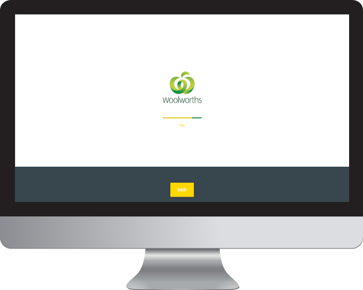

When you are using your computer 6–12 hours per day, 5½ days per week, your eye muscles get strained due to focussing on short distances. Couple that with reduced blink rates of up to 68–80%* and you can see why your eyes suffer.
The unnatural sedentary position puts enormous stress on your lower back and neck. Over time, as you age, chronic back pain could emerge.
Studies have shown that most employees don't skip work when they have eye strain. Instead, they operate at reduced productivity levels. In 2011, the loss was estimated at $799* USD per employee in Japan.
The Solution
What does the app do?
The only solution to digital eye strain and back pain is to take regular short breaks. The problem is when you're working hard, it's tough to take a break.
theCucumber.app is a simple yet powerful break scheduler designed and optimized for teams (& individuals). It covers your entire workspace so the whole team takes their break synchronized. This fosters team unity and eventually becomes engrained in the team culture.
It's available for macOS and Windows 10. Within a month*, your team should notice reduced eye strain, better back and neck health, and in some fields, improved concentration and creativity.
How does it work?
Managers set scheduled breaks for the entire team. No matter the timezone or how lagging the system time is, the breaks are scheduled in unison to generate team cohesion.
Optometrists advocate the 20–20–20 rule. This means every 20 minutes, take a 20–second break by looking at something 6m( 20ft ) away. This will help relax your eye muscles from the stress and strain of looking at a closeup screen.
To counter the effects of a sedentary lifestyle, stretch and walking short breaks every hour is recommended.
All schedules are extensively customizable so they can operate during office hours.
Features
Robust Screen Blocking
When you're working hard, it's tough to take a break. Robust screen blocking covers your workspace to force you to take your scheduled breaks until it becomes habitual. The productivity gains will come in the long-run.
Blink Alarm
Your blink rate reduces by 68–80% when you're in front of a screen. The increased dryness contributes to digital eye strain. You can set an alarm to remind you to blink at your natural frequency.
Offline Enabled
Eye strain can strike when you're not online. You could be working in an airplane or remotely in the middle of the Australian Outback. The scheduled breaks will continue to protect you.
Presentation Pauses
Sometimes you're in a video conference. Other times you've got an important presentation. You can pause the app up to the daily limit so it doesn't interfere with immediate priorities.
Urgent Tasks
The Screen Block is there to help you. On the rare occasion when you have an urgent task, you can skip the scheduled break — but only up to a daily limit.
Sophisticated Scheduling
Managers can create fine-grained break schedules such as only during office hours. More advanced users can use CRON syntax to create breaks such as on a particular day of the week or range of months.

Team Unity
Enterprise customers can set their team or company logo as the design.
Read the Research
Impact of dry eye on work productivity (2012) by Yamada, M, Et al.
Key take-aways
Dry Eye is high amongst professional workers using visual displays such as computer screens and smartphones.
Loss of productivity may occur through either absenteeism or presentism.
Presentism refers to when a worker comes to work, but due to the disease, can not work with normal levels of productivity.
Absenteeism refers to absence from work or early leaving.
Some research suggests that absenteeism contributes to 2-5 days off work, whilst presentism contributes to 191-208 days annually. Presentism is the more significant issue.
Based on JPY-USD exchange rate of June 26, 2011, the cost of work productivity loss per person was $799 for a worker with definite dry eyes (compared to no dry eyes).
Introduction
Dry Eye is a chronic eye disorder that is prevalent in many countries. It has a significant impact on the daily social lives of affected patients. They have more difficulty reading, carrying out professional work, using a computer, watching TV, and driving compared to people who don’t suffer from dry eye.
The symptoms include eyes:
get tired easily
have eye mucus
feel gritty
feel heavy
feel dry
feel uncomfortable
feel painful
tears without reason
blurry eyesight
feel itchiness
feel light dazzling
often reddened
The authors conducted a study to quantify the average productivity loss in Japan.
Participants were divided into subgroups:
Definite Dry Eye Group (formal medical diagnosis AND symptoms listed above)
Marginal Dry Eye Group (formal diagnosis BUT NO symptoms)
Self-Reported Group (no formal diagnosis BUT HAVE symptoms)
Control Group (no formal diagnosis AND NO symptoms)
Discussion
Based on JPY-USD exchange rate of June 26, 2011, the cost of work productivity loss per person was $799, $58 and $1036 USD for Group A, B and C respectively, compared to the Control Group.
The cost difference between Group A and B was assumed to be due to the difference in symptoms.
The annual cost of treatment is estimated to be $651 USD. Therefore the benefits of treatment outweigh the cost.
Conclusion
Providing treatment to control symptoms of dry eye can be justified from the viewpoint of medical costs in addition to other benefits, such as enhancing daily function and improving quality of life.
Japan is estimated to have a workforce of 63 million people. Of these, 87.5% are office workers who use personal computers, which is approximately 55 million people.
The incidence of dry eye is reported to be between 23-32.3%, the prevalence is dry eye workers is between 12.6 and 17.8 million. The leads to an annual economic cost to Japan to the value of $9.3-15.4 billion USD.
If 50% of the workers received treatment, the economic benefits to the Japan economy would be $4.7-7.7 billion USD.
Effectiveness of a participatory eye care program in reducing eye strain (2017) by Sudaw Lertwisuttipaiboon, Et al.
Key take-aways
70.6% of computer workers have experienced eye strain.
It is thought to be caused by fatigue in the eye muscles due to prolonged near-vision work, as well as a reduced blinking rate due to mental concentration.
Sufficient blinking and performing eye exercises may help relieve dryness and tension in the muscles in the eye.
Frequent micro-breaks produced the greatest reduction in eye strain.
8 weeks of micro-breaks (with an emphasis in relaxing eyes) significantly reduced eye strain in computer workers.
Introduction
Prolonged use of computers can lead to complications such as eye strain. Eye strain (Asthenopia) is considered the most common complaint amongst computer users. The National Institute for Occupational Safety and Health (NIOSH) indicate that 70.6% of workers who use computers in their workplace suffered from eye strain. The majority of studies have shown that the prevalence of eye strain is associated with an increase in the time spent in front of a computer.
Eye strain is a syndrome covering 8 different symptoms: smarting, itching, gritty feeling, aches, sensitivity to light, redness, teariness and dryness. Eye strain can cause significant discomfort and lead to reduced productivity and job satisfaction. Some worker’s experience continued impairment or reduced visual ability after working.
The main cause of eye strain is thought to be the fatigue of the ciliary and extraocular muscles due to the prolonged accommodation and vengeance required for near-vision work.
Another factor is due to dryness of the eyes resulting from reduced blinking due to mental concentration.
Proposed solutions include:
Increase blink rate of eyes
Taking regular rest breaks
Studies have demonstrated that frequent micro-breaks produced the greatest reduction in eye strain.
Discussion
The researchers conducted an 8-week experiment to test regular micro-breaks were effective in reducing the symptoms of eye strain.
One group of computer workers (“intervention group”) were given a 30-second break every 30 minutes to relax their eyes and stretch their body, and adjust their posture. One 15 minute rest break was also given in the morning and afternoon to do eye-neck exercises.
The other group of computer workers (“control group”) were not given any rest breaks for their eyes.
The effectiveness of the experiment was tested at the beginning of the experiment, at week 4 and the conclusion. Symptoms of eye strain were tested using a questionnaire.
Conclusion
The experiment showed that at the start of the experiment, 80% of the intervention group and 85.7% of the control group had eye strain. These are the “baseline results”.
At week 4, 25.7% of the intervention group and 77.1% of the control group had eye strain. At the conclusion, 28.6% of the intervention group and 80% of the control group had eye strain.
It was shown that the micro-break schedule (and eye-neck exercises) given to the intervention group significantly reduced the level of eye strain.
The results were consistent with other studies that demonstrated that scheduled breaks were significantly more effective than allowing workers to take breaks on their own. Also, more frequent micro-breaks produced the greatest reduction in discomfort.
See also:
Henning RA, Et al. Microbreak length, performance and stress in a data entry task (1989)
McLean L, Et al. Computer terminal work and the benefit of microbreaks (2001)
Henning RA, Et al. Frequent short breaks from computer work: effects on productivity and well-being at two field sites (1997)
Impact of Dry Eye Disease on Work Productivity, and Patients’ Satisfaction with Over-the-Counter Dry Eye Treatments (2016) by Nichols, K, Et al.
Key take-aways
Dry Eye is one of the most common reasons why people visit doctors and optometrists.
It is highly prevalent amongst the working-age population - especially computer workers.
Dry Eye has minimal impact on worker absenteeism (not being able to come to work) but does have an appreciable impact on work productivity - particularly among workers with severe Dry Eye.
Performance impairment caused by Dry Eye also carries through to patient’s activities outside work, affecting their quality of life.
Introduction
Dry Eye disease is one of the most common reasons for patient visits to eye care specialists.
Common symptoms include ocular discomfort (burning, stinging and itching), ocular fatigue, blurred vision, photophobia, and pain. Dry eye is associated with reduced functional visual acuity, especially when reading, driving, watching TV and computer usage.
Quality of life studies indicate that Dry Eye symptoms have a detrimental effect on social and physical functioning, vitality, psychological well-being and general health.
Approximately 5M Americans over the age of 50 suffer from moderate to severe Dry Eye. Tens of millions of Americans experience milder symptoms.
Many patients with Dry Eye symptoms prefer to self-treat using over-the-counter medications in an attempt to reduce ocular symptoms.
Dry eye symptoms are highly prevalent in the working-age population - particularly computer workers.
This paper attempts to quantify the productivity loss of workers due to Dry Eye, as well as the effects of daily activities outside of work.
Discussion
A questionnaire with 6 questions was conducted:
Q1: employment status
Q2: number of work hours missed during the past 7 days due to Dry Eye
Q3: number of work hours missed during the past 7 days due to other reasons
Q4: number of hours worked during the past 7 days
Q5: impact of Dry Eye on performance at work during the past 7 days, using a scale from 0 (no impact) to 10 (total prevention).
Q6: impact of Dry Eye on performance of non-work related daily activities using a scale from 0 to 10.
Absenteeism is defined as the percentage of work missed due to Dry Eye.
It is evaluated using: [Q2/(Q2+Q4)] × 100.
Presenteeism is defined as the percentage impairment of work performance due to Dry Eye.
It is evaluated using: Q5/10 × 100.
Productivity Impairment is defined as the percentage of overall work productivity lost due to Dry Eye.
It is evaluated using: ([Q2/(Q2+Q4)] + [1-{(Q2/(Q2+Q4)) × (Q5/10)}]) × 100.
Activity impairment is defined as the percentage impairment of non-work related activities due to Dry Eye. It is evaluated using: (Q6/10) × 100.
Conclusion
Dry Eye had a negligible effect on work attendance (on average, 5 minutes of work was lost during the preceding workweek). However, it’s impact on workplace performance and overall work productivity was substantial (29% impairment).
Impairment of workplace performance and productivity was closely linked to symptoms of Dry Eye.
Performance of daily activities outside of work was impacted by on average 30% due to Dry Eye, with a greater impact on people with severe Dry Eye.
Digital eye strain: prevalence, measurement and amelioration (2018) by Sheppard, A, Et al.
Key take-aways
DES (Digital Eye Strain) is getting more and more prevalent in developed nations as more and more people start using computer systems (including smartphones and tablets).
Environmental factors such as gaze angle and humidity, exposure to blue light and reduced blink rate are believed to cause DES.
The discomfort to computer workers causes substantial economic productivity loss.
Lubricating eye drops can help mitigate but not eradicate DES.
Introduction
Computer Vision Syndrome (CVS), also known as Visual Fatigue (VF) and Digital Eye Strain (DES), refers to a range of eye and vision-related symptoms linked to the usage of digital devices.
The symptoms can cause considerable discomfort to sufferers which may have considerable economic consequences when computer workers are affected.
Symptoms include eyestrain, headaches, blurred vision, dry eyes and pain in the neck and shoulders.
According to a study of New York City computer workers, by Portello et al, the prevalence of various symptoms are: Blurred vision while viewing a computer: 17.3%, Blurred vision while looking at a distance: 23.4%, Slowness in refocusing from one distance to another: 21.6%, Irritated or burning eyes: 27.5%, Dry Eyes: 31.5%, Eye strain: 30.6%, Headache: 22.3%, Tired eyes: 39.8%, Sensitivity to blue lights: 26.3% and general eye discomfort: 30.8%.
Across all age groups in developed nations, the usage of digital devices has increased dramatically in recent years. In the UK, it is estimated that adults spend 4 hours and 45 minutes in front of a screen. In the US, two-thirds of people aged 30-49 years spend over 5 hours on digital devices.
Discussion
There are various ways to measure DES ranging from symptom questionnaires to blink rates and squinting levels.
According to studies, a worker’s blink rate reduces from 18.4-22 blinks/min to 3.6-7 blinks/min during computer usage.
Environmental influences such as gaze angle is also considered relevant to dryness. Office environments commonly feature low humidity, ventilation fans, air conditioning, and airborne dust particles all contribute to tear film evaporation in the eye.
Using lubricating eye drops can reduce the symptoms but do not eradicate the issue.
Exposure to blue light can be harmful to the retina. Some studies suggest that exposure to blue light also causes DES.
Conclusion
Treatment of dry eye may have a substantial influence on comfort with screen use, which can economic consequences.
Ocular Ergonomics for the Computer Vision Syndrome (2018) by Turgut, B
Introduction
Computer Vision Syndrome (CVS) (also known as Digital Eye Strain) is caused by excessive usage of devices such as computers, tablets, e-book readers, hand-held game consoles and smartphones.
Ocular symptoms include blurred vision, burning sensation, eye redness, lacrimation, ocular pain or discomfort, focusing problems, diplopia, dry eyes, and headaches.
The computer screen doesn’t have dense black characters, contrast and well-defined borders compared to newspapers and books. For these reasons, the eye has difficulty focussing on the characters which creates fatigue in the eye muscles. Additionally, the presence of glare and reflections on the screen put additional pressure on the eyes.
CVS is experienced by 90% of computer workers.
Recommendations
The distance between the eye and the screen should be 50-63 cm (20-25 inches). Increase the font size too.
The gaze position of the eye to the screen should be slightly downward.
The level of room lighting should be enhanced because the screen’s much brighter light causes eye strain. However, keep bright lighting overhead to a minimum.
Position the screen to avoid glaring and reflections. A matte screen glare filter can be used. If you wear glasses, anti-glare lenses can also help.
The contrast of your screen’s color settings should be increased.
Eyes should be rested according to the 20-20-20 rule. Every 20 minutes, take a 20-second break to focus on an object 20 feet (6m) away.
An artificial humidifier can be used to improve the room’s moisture level. Humidity should be set to approx. 45%.
Increase blinking rate to help prevent dryness in eyes. 14 blinks per minute is typical when not in front of a computer screen.
Higher quality high-resolution LCD monitors with a matter finish is recommended.
Glasses with blue-violet filter lenses can be used.